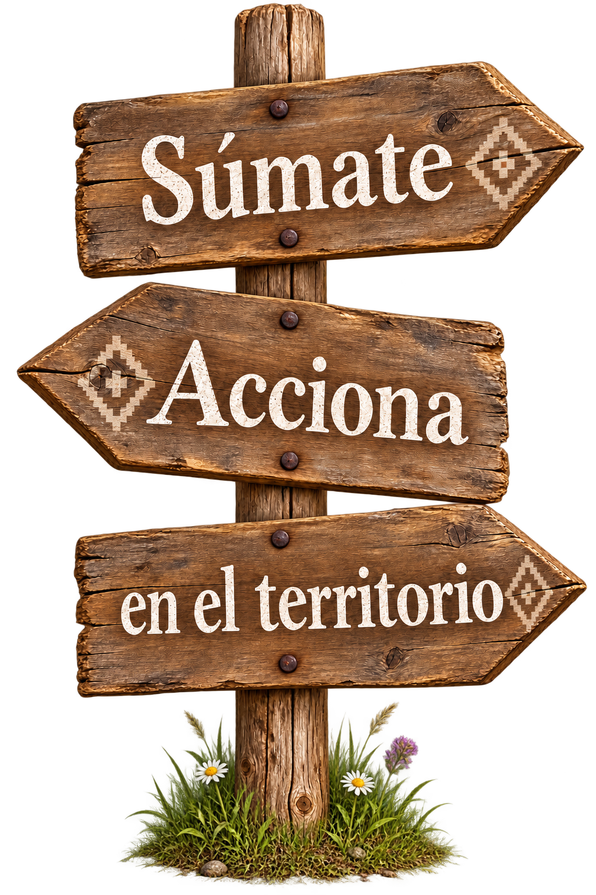

Guardianas
Para acompañar la red desde cualquier lugar del mundo.
$10.000 CLP/ mes
Aporte contempla
- Novedades de la red.
- Charla introductoria en línea.
- Prioridad para conocer convocatorias.
Beneficio para todas las membresías
Ingresas automáticamente con la inscripción de cualquier membresía.
 Podrías ser tú
Podrías ser tú
Compartimos nuestra cultura sin fronteras, con el newen de Las Ñañas desde Wallmapu. ¡Chaltumay!
RED DE VOLUNTARIADO · COMUNIDAD INTERNACIONAL

Para acompañar la red desde cualquier lugar del mundo.
$10.000 CLP/ mes
Para participar, aprender y comenzar a vincularte con el territorio.
$15.000 CLP/ mes
Para vivir una experiencia territorial más profunda y acompañada.
$25.000 CLP/ mes
Las experiencias presenciales requieren inscripción previa y están sujetas a fechas y cupos. Traslado y alojamiento se informarán en cada convocatoria.
VOLUNTARIADO · APRENDIZAJES COMPARTIDOS
Selecciona una bitácora para conocer cómo cada voluntaria llegó, compartió y se llevó un aprendizaje de Las Ñañas.

Bitácora 01
Relato de ejemplo reemplazable: aquí irá la experiencia autorizada de Alejandra sobre su llegada, lo que compartió y el aprendizaje que se llevó de Las Ñañas.

Bitácora 02
Relato de ejemplo reemplazable: aquí irá la experiencia autorizada de Ayla sobre los saberes compartidos, el territorio y su aprendizaje junto a la comunidad.

Bitácora 03
Relato de ejemplo reemplazable: aquí irá la experiencia autorizada de Carlos sobre su participación, los vínculos creados y aquello que aprendió en Las Ñañas.
Los relatos actuales son textos de ejemplo y deben reemplazarse por testimonios autorizados.
Inscripción
Completa este formulario con tus datos para coordinar tu visita, intereses y estadía. Nos pondremos en contacto contigo a la brevedad.
equipolasnanas.aiep@gmail.com